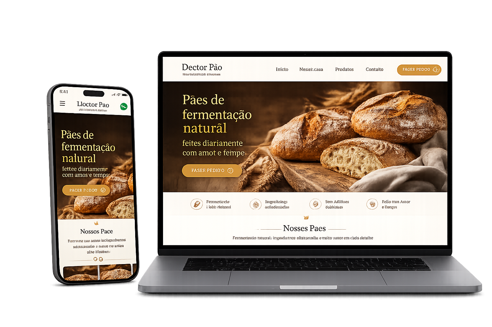

Criamos Tours Virtuais 360°, otimizamos sua presença no Google Maps e desenvolvemos um site que realmente gera resultados para o seu negócio.
Clique para explorar a qualidade visual e a imersão de cada espaço no Google.
Três pilares que trabalham juntos para atrair mais clientes para o seu negócio.
Otimizamos seu Google Meu Negócio para que sua empresa seja encontrada por quem busca na sua região.
Mais visibilidade, mais clientes.Tours imersivos integrados ao Google Maps e ao seu site que permitem ao cliente conhecer seu espaço antes de visitar.
Mais confiança, mais visitas.Sites rápidos, modernos e otimizados para todos os dispositivos que transformam visitantes em clientes.
Mais conversões, mais resultados.Cada projeto é pensado exclusivamente para carregar em menos de 2 segundos, impressionar o seu cliente e gerar agendamentos e vendas direto pelo celular.

Simples, rápido e sem complicação para você.
Vamos até o seu espaço para fazer a captura das fotos estáticas e 360° profissionais.
Criamos o tour, ajustamos sua presença no Google e estruturamos o seu site para gerar resultados.
Colocamos tudo no ar e a sua empresa passa a atrair clientes no piloto automático.
Proprietário
"O trabalho de SEO local e as fotos 360° mudaram o patamar do nosso café. Clientes novos chegam toda semana dizendo que nos acharam no Google Maps."
Gerente de Marketing
"Excelente suporte e entrega rápida. O site integrado com o tour virtual superou nossas expectativas. No começo tivemos um pequeno ajuste no prazo das fotos, mas a equipe resolveu com muita agilidade."
Diretoria
"O tour 36° ficou impecável! Conseguimos fechar muito mais reservas porque as pessoas agora conseguem ver toda a nossa estrutura antes mesmo de vir."
Tudo o que você precisa saber sobre como destacar sua empresa na internet.
O SEO Local é um conjunto de estratégias para fazer a sua empresa aparecer nas primeiras posições do Google e do Google Maps quando alguém busca pelos seus serviços na sua região. Isso atrai clientes altamente qualificados que já estão prontos para comprar de você.
Nós vamos até o seu estabelecimento para fazer a captura das imagens em alta definição usando equipamentos profissionais. Depois, tratamos as imagens para evitar erros de perspectiva e publicamos o tour virtual diretamente na sua ficha do Google. Assim, qualquer pessoa pode passear pela sua empresa diretamente pelo computador ou celular.
Não é obrigatório, mas ter um site otimizado (como as nossas Landing Pages) multiplica seus resultados. Um site bem estruturado dá mais autoridade para o Google te posicionar no topo e serve como o destino perfeito para converter visitantes em clientes que entram em contato pelo WhatsApp.
As atualizações de fotos 360° costumam aparecer em poucos dias após a aprovação do Google. Já o posicionamento orgânico (SEO Local) é um processo de otimização contínuo, onde as melhorias mais expressivas de acessos e rotas começam a ser percebidas entre 30 a 90 dias.
Vamos conversar sobre o seu projeto? Fale conosco agora pelo WhatsApp para garantir um diagnóstico personalizado e destacar a sua empresa na sua região.